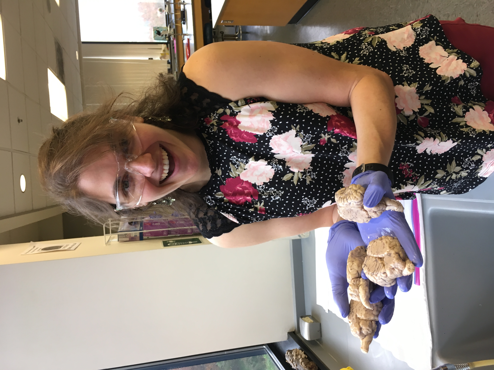
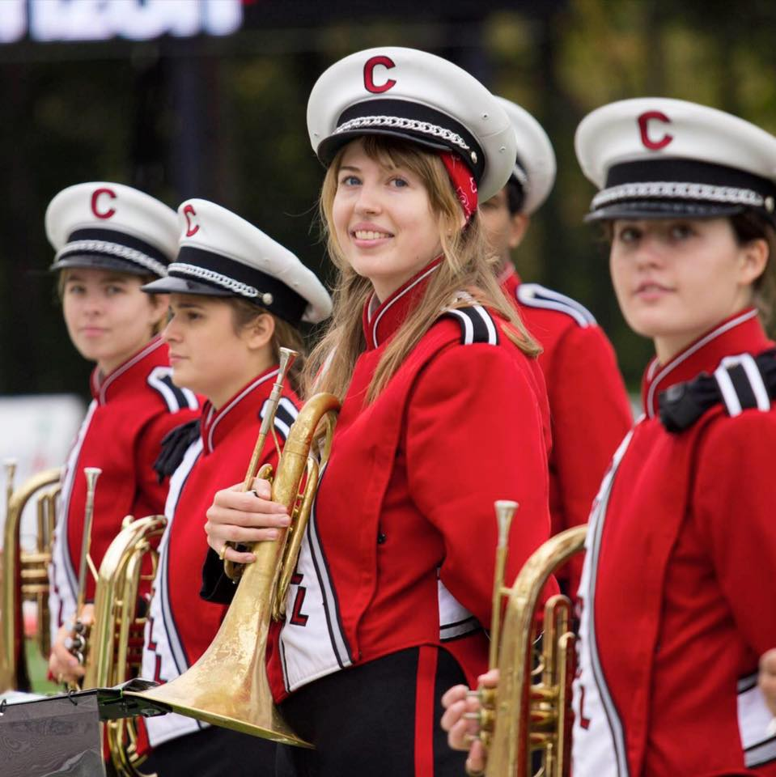

Maria Komorowski

2017 Horn Co-Section Leader
2018 Alumni Relations Co-Chair
2016-2017 Pep Band Historian
Class: 2019
Hometown: North East, PA
College: Human Ecology
Major: Nutritional Sciences
Sam Dean

2011 Senior of the Year
2010, 2011 Uniform Chair
Class: 2012
Hometown: Gambrills, MD
College: College of Agriculture and Life Sciences
Major: Natural Resources
Somehow, someway, she acquired a reputation for mischievousness.
Maybe it was paying the treasurer entirely in coins?
Was it that smiley face she doodled on a photo of the drum major's butt?
The surprise Furby she mailed the tubas? Unclear.
Even as an alum, she continues to send annual holiday (trolliday?) cards to all her band friends.
A wildlife biologist and turtle expert by training, her arsenal of weird animal facts is unparalleled. In her OLDness, she now coordinates college science labs and teaches biology and human anatomy. You should know she's not like those other professors, she's a ~cool~ professor.
Kristen Rose
2015 Marching Band Publicity Co-Chair
2016 & 2017 Alumni Relations Co-Chair
Class: 2017.5
Hometown: Gibsonia, PA
College: CALS
Major: Biological Sciences
KR spent most of her childhood being brainwashed into Joining Band (TM) - her parents, also BRMB alumni, raised her on a steady diet of stories from their glory days. When she came to Cornell she was a little hesitant to join such a loud, eccentric, and stupidly friendly group of people, but she went to auditions ... and the rest is history!!
KR now lives in Pittsburgh where she is pursuing a Doctor of Physical Therapy degree from Chatham University. She treasures all of her memories from those good old days on the hill, and her times with the band will always hold a very special place in her heart!